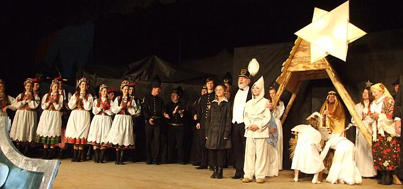

A tymczasem w Cameracie...
.
2014-01-06
Godz. 14.00 przyjeżdżamy do Pawlikowic, aby wszystko przygotować dla chóru na występ w Pastorałce wielickiej. Nie może być żadnej pomyłki, jak również nic nie może brakować w sprzęcie. Wszystko „gra”, więc krótka rozśpiewka.


O! Wrócił do nas Marek, chyba za nami tęskni. Popatrzcie co robi mundur. A może nie mundur :)

© Stowarzyszenie Muzyczne Chór Camerata Wieliczka
Projekt i wykonanie:  Prowadzenie strony: Małgorzata Wysocka-Cebula
Prowadzenie strony: Małgorzata Wysocka-Cebula